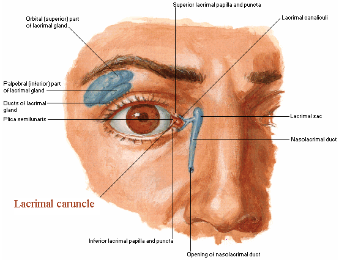

Lacrimal caruncle
/car·un·cle/ (kar´ung-k'l)
* Định nghĩa:
+ Cục lệ

+ Lacrimal caruncle là một cấu trúc hình vòm, nhỏ, màu hồng như thịt định vị góc mắt trong, giữa nếp bán nguyệt. Nó chứa tuyến mồ hôi và tiết bã đã biến đổi cũng như tế bào goblet và lông.